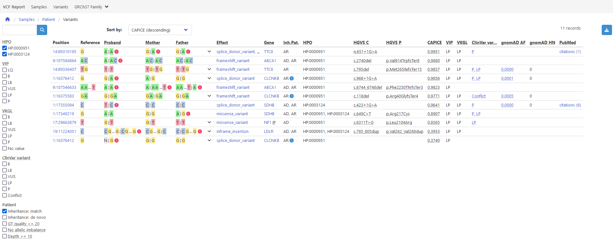

Report templates¶
VIP outputs a standalone HTML report that can be viewed in any modern browser.
The report is based on the input sample sheet information and the output variant vcf data.
Default¶
As a default VIP uses a report template that is suitable for most analysis:

Above: default report template
Customization¶
Using the vcf.report.template parameter (see here) it is possible to specify a different report template to create reports tailered to your needs.
The following repositories might be of interest when creating a new report template:
The vip-report tool creates reports based on a report template as described in the following repositories: